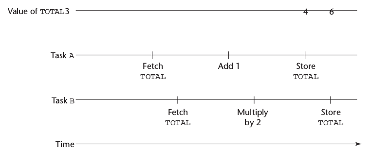
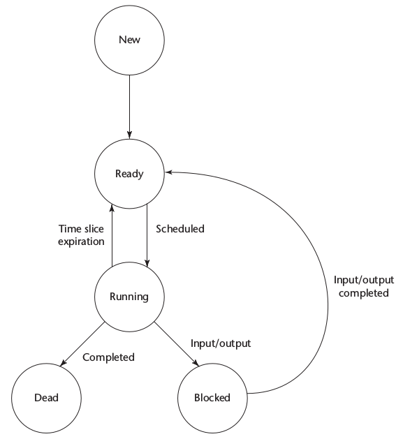
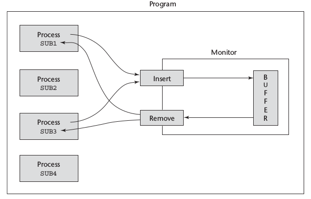
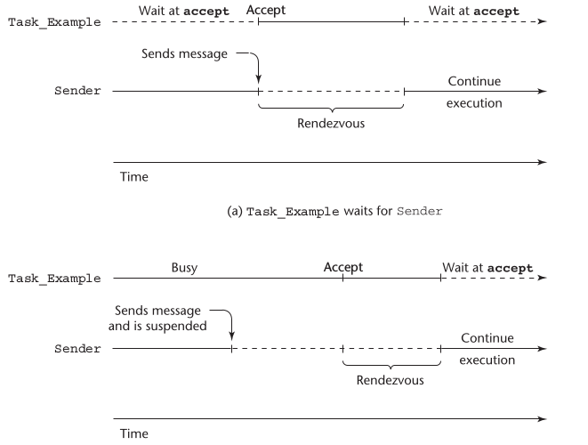
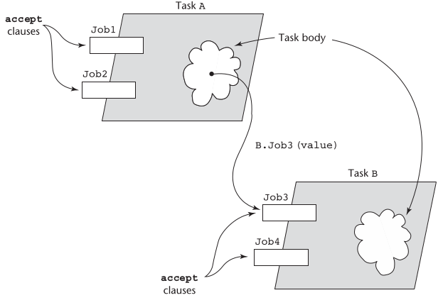

Created: 2024-10-14 lun 16:40


wait(aSemaphore)
if aSemaphore’s counter > 0 then
decrement aSemaphore’s counter
else
put the caller in aSemaphore’s queue
attempt to transfer control to a ready task
-- if the task ready queue is empty,
-- deadlock occurs
end
release(aSemaphore)
if aSemaphore’s queue is empty then
increment aSemaphore’s counter
else
put the calling task in the task ready queue
transfer control to a task from aSemaphore’s queue
end
semaphore fullspots, emptyspots;
fullstops.count = 0;
emptyspots.count = BUFLEN;
task producer;
loop
-- produce VALUE –-
wait (emptyspots); {wait for space}
DEPOSIT(VALUE);
release(fullspots); {increase filled}
end loop;
end producer;
task consumer;
loop
wait (fullspots);{wait till not empty}}
FETCH(VALUE);
release(emptyspots); {increase empty}
-- consume VALUE –-
end loop;
end consumer;
semaphore access, fullspots, emptyspots;
access.count = 0;
fullstops.count = 0;
emptyspots.count = BUFLEN;
task producer;
loop
-- produce VALUE –-
wait(emptyspots); {wait for space}
wait(access); {wait for access)
DEPOSIT(VALUE);
release(access); {relinquish access}
release(fullspots); {increase filled}
end loop;
end producer;
task consumer;
loop
wait(fullspots);{wait till not empty}
wait(access); {wait for access}
FETCH(VALUE);
release(access); {relinquish access}
release(emptyspots); {increase empty}
-- consume VALUE –-
end loop;
end consumer;

task Task_Example is
entry ENTRY_1 (Item : in Integer);
end Task_Example;
accept entry_name (formal parameters) do
...
end entry_name
task body TASK_EXAMPLE is
begin
loop
accept ENTRY_1 (ITEM: in FLOAT) do
...
end ENTRY_1;
end loop;
end TASK_EXAMPLE;


task WATER_MONITOR; -- specification
task body WATER_MONITOR is -- body
begin
loop
if WATER_LEVEL > MAX_LEVEL
then SOUND_ALARM;
end if;
delay 1.0; -- No further execution
-- for at least 1 second
end loop;
end WATER_MONITOR;
task body TASK_EXAMPLE is
loop
select
accept ENTRY_1 (formal params) do
...
end ENTRY_1;
...
or
accept ENTRY_2 (formal params) do
...
end ENTRY_2;
...
end select;
end loop;
end TASK_EXAMPLE;
when not FULL(BUFFER) =>
accept DEPOSIT(NEW_VALUE) do
task GAS_STATION_ATTENDANT is
entry SERVICE_ISLAND (CAR : CAR_TYPE);
entry GARAGE (CAR : CAR_TYPE);
end GAS_STATION_ATTENDANT;
task body GAS_STATION_ATTENDANT is
begin
loop
select
when GAS_AVAILABLE =>
accept SERVICE_ISLAND (CAR : CAR_TYPE) do
FILL_WITH_GAS (CAR);
end SERVICE_ISLAND;
or
when GARAGE_AVAILABLE =>
accept GARAGE (CAR : CAR_TYPE) do
FIX (CAR);
end GARAGE;
else
SLEEP;
end select;
end loop;
end GAS_STATION_ATTENDANT;
Created by yjwen.